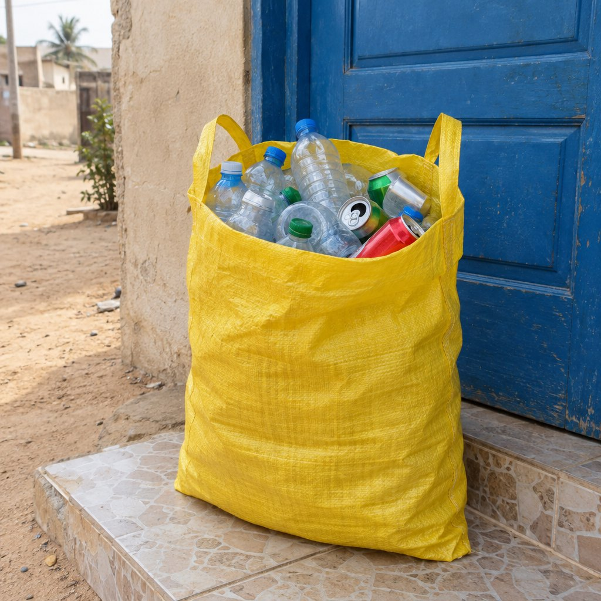

Phase 1
Kit de base
- Une bâche de couverture
- Des cordes ou sangles
- Des crochets fixés sur la caisse
12 000 à 20 000 FCFA
par charrette (estimation). Payé surtout par un sponsor local, plus 2 000 à 5 000 FCFA du charretier.
La solution
La charrette est ouverte : les déchets tombent. Le charretier travaille seul : pas de circuit, pas de débouché. Nous agissons sur les deux.
Innovation matérielle
Phase 1
par charrette (estimation). Payé surtout par un sponsor local, plus 2 000 à 5 000 FCFA du charretier.
Phase 2
par charrette (estimation). Financé par une subvention de la commune.

Pour le ménage
Bouteilles, plastiques et canettes dans le sac ; le reste dans la poubelle habituelle. Le charretier le reconnaît sans l’ouvrir. Gratuit pour le ménage, payé par le sponsor.
Vue éclatée
Faites tourner la charrette, écartez les pièces, roulez la bâche. Chaque pièce dit quel problème elle règle.
Glissez pour tourner. Molette ou pincement pour zoomer. Touchez un numéro pour isoler la pièce.
Existant déjà sur la charretteKit de base bâche, cordes et crochetsKit complet s'ajoute au kit de base
Dimensions et formes indicatives, à valider avec un charretier avant toute fabrication.
Innovation organisationnelle
Découpée par rues avec les délégués de quartier.
À jours fixes, que les ménages connaissent.
Courte, avec contrôle du harnais du cheval.
Remis après la formation, reconnu par les riverains et la commune.
Le parcours
Les ordures s’accumulent, les charrettes les dispersent.
Le ménage reçoit son sac, le charretier son kit et son label.
Le sac de couleur d’un côté, la bâche fermée.
Les recyclables triés sont vendus à meilleur prix.
Une rue propre, une activité reconnue.